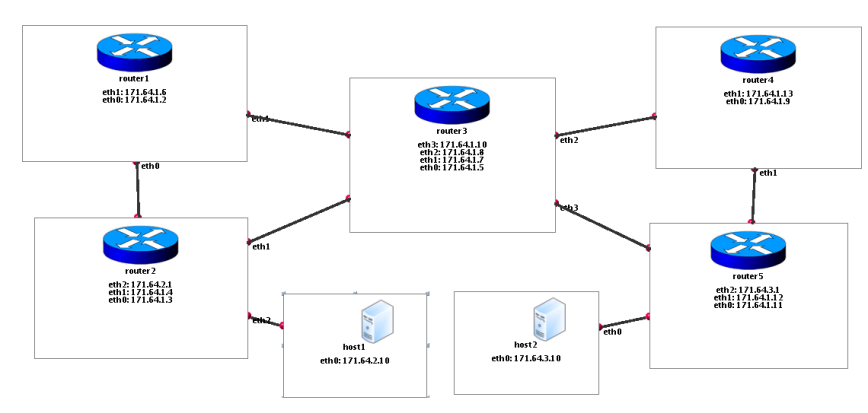
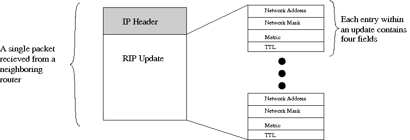

|
Overview
In this assignment, you will implement a simplified version of the
Routing Information Protocol (RIP); a simple intra-domain routing
protocol used in some Internet networks. You will implement and test your routing protocol
within a virtual network environment called Clack. Clack lets
you build a (or in our case, part of a) fully-functional router in Java and has a graphical interface that
enables you to visualize the
flow of packets both between and within each router.
We will provide you with a network of Clack routers that
already contain components to do all packet forwarding, but have no
entries in their routing tables.
You will implement the last component, a piece of code to
implement RIP routing and make your router capable of forwarding traffic.
By the end of this project your modified Clack router should be able to build its own forwarding
table from RIP advertisements sent by other routers, send the appropriate
advertisements to neighboring routers, and route traffic through
complex topologies containing multiple nodes.
More specifically, each team will be assigned the virtual network
shown in the following figure:

When developing, your code will be be running only on router1, the router
at the top-left of the network view. All other routers
will already be running "reference implementation" of RIP,
while the two hosts do not participate in routing.
You need to implement RIP in your Clack router and make it
inter-operate with the other routers.
When you are done, all routers in the virtual network should
be able to use your RIP code on ALL nodes to find any available shortest
path to any other router, even if links are disabled or link metrics are changed (see below).
Before explaining more about Clack, we will describe the RIP
functionality you must implement for this assignment.
Routing
Information Protocol (RIP)
This section provides enough details about RIP so that you can implement.
RIP is a routing protocol based on the Bellman-Ford (or distance
vector) algorithm. RIP has been used as the intra-domain routing
algorithm in many small-scale autonomous systems (ASes) in the Internet
since the early days of the ARPANET. RIP is limited to networks whose
longest path (the network's diameter) is 15 hops. RIP version 2 is
specified in
RFC 2453(RIP v2 is backward compatible with RIP v1
specified in RFC 1058). We recommend reading the newer RFC 2453, but you will NOT implement all
features supported by RIP version 2. Below is a brief description
of the protocol (adapted from RFC 2453) that outlines the specific functionality
your code must support.
RIP Basic Procedure
At a high level, the basic
procedure carried out by every entity (i.e., router) that participates in
the routing protocol is as follows:
-
Keep a
routing table (or more accurately, a forwarding table) with an entry
for every possible destination network.
Each routing table entry contains the destination network, the distance D (also called a 'metric' or
'cost') to reach the destination, and the 'next-hop' router G that is the next
router on the chosen path to that destination.
-
Periodically, send a routing update to every neighbor. The update
is a set of messages that contain all of the information from the
routing table. It contains an entry for each destination network, with the
distance to reach that destination, as well as timer information indicating how
much longer that data should be considered valid.
-
When a routing update arrives from a neighbor G', add the cost associated with
the network (i.e., link)
that is shared with G'. (This should be the network over which the
update arrived.) Call the resulting distance D'. Compare
the resulting distances with the current routing table entries to that same
destination network N. If the
new distance D' for N is smaller than the existing value D, adopt the
new route. That is, change the table entry for N to have metric D' and
router G'. If G' is the router from which the existing route came,
i.e., G' = G, then use the new metric even if it is larger than the old
one.
More specifically, each node maintains a routing table, with each entry
contains at least the following information:
-
Destination address:
RIP represents destination networks by
a "network address" and a corresponding "network mask", both of which
are IPv4 addresses. Commonly, the network address and mask together are
referred to as a "network prefix" and written as X.X.X.X / Y, where X.X.X.X is
the network address and Y is the length in bits of the network mask.
-
Metric:
Total cost of getting a datagram from the router
to that destination network. This metric is the sum of the costs
associated with the networks that would be traversed to get to
the destination. -
Next hop: The IPv4 address of the next router
along the path to the destination. If the destination is on one
of the directly-connected networks, this item is not needed.
-
Time-to-Live Value (TTL):
Timer information to determine when routing information is stale.
The entries for the directly-connected networks are set up by the router
using information gathered by means not specified in this
protocol. The metric for a directly-connected network is set to
the cost of that network. Typically, 1 is the used as the network
cost. In that case, the RIP metric reduces to a simple
hop-count. More complex metrics may be used when it is
desirable to show preference for some networks over others (e.g.,
to indicate of differences in bandwidth or reliability).
Split Horizon with Poisoned Reverse
To prevent routing loops involving
two nodes from occurring and to
accelerate convergence in case of link cost changes, RIP uses a scheme
called "split horizon with poisoned reverse." The simple split horizon
scheme omits routes learned from one neighbor in updates sent to that
neighbor. Split horizon with poisoned reverse includes such routes in
updates, but sets their metrics to infinity (infinity is typically set
to 16, since the maximum path limit in RIP is 15).
Triggered Updates
Split horizon with
poisoned reverse will prevent any routing loops that involve only two
routers. However, it is still possible to end up with
patterns in which three routers are engaged in
mutual deception. For example, A may believe it has a route
through B, B through C, and C through A. Split horizon
cannot stop such a loop. This loop will only be resolved when the
metric reaches infinity and the network involved is then declared
unreachable. Triggered updates are an attempt to speed up this
convergence. To get triggered updates, we simply add a rule
that whenever a router
changes the metric for a route, it is required to send update
messages almost immediately, even if it is not yet time for one
of the regular update message.
Message Format
Our simplified RIP protocol uses the IP layer directly to transmit updates to neighbors. Each RIP update
contains one or more entries, each of which corresponds to a single network being advertised by
some router (note: in your topology, networks correspond to links between routers, or between
routers and hosts). Each entry
contains four fields, depicted below. The Network Address and Network Mask together define the network
being advertised by this entry. The Metric field describes the cost of reaching that network
according to the router creating the update packet. Likewise, the TTL field is the time-to-live
field for that advertisement, according to the router creating the update.

Timers
RIP has several types of timers for sending periodic updates,
timing out routes and actually removing routes from the routing table, see RFC 2453 for details. However, you will implement the
following simpler timers.
- Periodic updates: Every 10 seconds, the RIP process sends an
unsolicited Response message containing the complete routing table to every neighboring router.
-
Route timeout: RIP
maintains a TTL (time to live) field for each dynamic route (i.e.,
a route learned from a neighboring router. Local
routes, which are directly connected networks, have an invalid TTL of -1).
When a router announces a local route to a neighbor, it sets the TTL to
20 seconds in the update. When a router places a new route in its
routing table, it uses the TTL value from the routing update. If a router
sees an update containing a destination/next-hop pair
that it is already using, it updates the TTL for that entry in its
local routing table.
Every 1 second, RIP
decrements the TTL of all dynamic routes. If a TTL of a route reaches 0, the route
is removed from the routing table.
Building and Running Clack
In this assignment, you will be programming within a virtual networking environment called Clack.
Clack provides a graphical view of a virtual network
of routers and allows you to explore inside a router to see
what is going on.
While you do not need to become a Clack expert to succeed at this
assignment, spending 10 or 15 minutes up-front at
http://www.clackrouter.net will save you time in the long-run.
Particularly, the
Clack Help Page provide an overview of how Clack works: Read that page before continuing .
Additionally, the advanced features on that page will make it much easier to visually debug your
routing code in an efficient manner.
Unpacking the Code
Unzip your clack_rip.zip archive. It should contain the following files:
-
clack-1.5.jar : The JAR file containing the Clack library
-
reference.topo : A Clack configuration file that will load Clack
with ALL routers running the reference implementation of RIP.
-
development.topo : A Clack configuration file that will load Clack with 'router1'
running YOUR
implementation of RIP, and with all other routers running the reference implementation.
-
finaltest.topo : A Clack configuration file that will load Clack with ALL
routers running YOUR implementation of RIP.
-
RIPRouting.java : The java file for your implementation of RIP.
It already contains the basic boiler-plate for
required for Clack components and some initial functionality to get you started.
-
RIPClackLoader.java : A java file to load Clack and make it
aware of your new RIP functionality.
The only file of these you will need to modify at any time is RIPRouting.java
You do NOT need to understand the internals of
either the configuration files or the RIPClackLoader class.
Running Clack
-
To test your java runtime setup, we will now try to run Clack
without any of your RIP specific code. Run Clack with :
java -cp clack-1.5.jar net.clackrouter.gui.ClackLoader -f reference.topo
You should see Clack load and connect, presenting you with a
view of your network. If not, make sure that Java is properly installed.
-
Now we want to run Clack using the RIPRouting component that you can modify.
First, build the two java file using:
javac -cp clack-1.5.jar *.java
If this fails, you may have to update to
a newer version of your Java compiler (version 1.4 or above).
Now run your version of Clack with a network configuration file
(we choose development.topo in this case):
java -cp .:clack-1.5.jar RIPClackLoader -f development.topo
Important: Notice the addition of the current directory
(i.e., ".") to the classpath. On windows, you may need to use a semi-colon
";" instead of a colon to separate entries in the class-path.
This loads a network of Clack routers, with 'router1' using your RIP implementation
and all other routers using the reference implementation.
Notice that the console output includes statements contained within your
RIPRouting.java file. Clack should indicate an error on 'router1', which drops each RIP
packet is receives.
This is all you need to know about compiling and running Clack so that you
can add your own RIP functionality.
The Basics of Coding within Clack
Using the "development.topo" configuration file, router1 will be fully configured
with Clack components to make a full router, except that the RIPRouting component
will be a stub that you must complete.
The RIPRouting component has one input port for accepting routing packets and one output port
for sending routing packets.
The Clack Javadoc will be essential
in understanding and using Clack APIs.
Handling Packets within Clack
Packets within Clack are represented by Java objects that expose the contents of a packet
at a particular level of encapsulation. For example,
you will be dealing exclusively with packets of the type
IPPacket
or
RIPRoutingUpdate . Each component within a Clack router accepts packets objects on input
ports, and passes those (potentially modified) packets to other router components via output ports.
Its important that you get to understand the
RIPRoutingUpdate class well, including its child class
RIPRoutingUpdate.Entry . A RIPRoutingUpdate packet represents a RIP update sent from
one router to another and contains a RIPRoutingUpdate.Entry
for each advertised network contained in the routing announcement.
When your RIPRouting component receives or sends a packet, it will be a IPPacket
with RIP data as its payload.
You can extract a RIPRoutingUpdate object from an IPPacket using:
IPPacket ip_packet = ....;
RIPRoutingUpdate update = new RIPRoutingUpdate(ip_packet.getBodyBuffer());
Outgoing RIPRoutingUpdate packets can be encapsulated in
IP using the static
IPPacket.wrap()
method, which returns an IP packet with the
supplied RIP packet as payload. For example:
InetAddress src, dst = .... ;
RIPRoutingUpdate update = new RIPRoutingUpdate();
VNSIPPacket ip_packet = VNSIPPacket.wrap(update, VNSIPPacket.PROTO_CLACK_RIP, src, dst);
Implementing Your RIP Component
Each Clack component is a Java object that extends the base class
ClackComponent. These component pass packets from one component to another in order to
implement all router functionality.
Your RIP component has only a single input port to receive packets. It receives all IP traffic addressed
to a router interface that does not have the protocol type of: TCP, UDP, or ICMP.
It receives these packets from the L3Demux component.
To receive packets your component implements the
ClackComponent.acceptPacket method:
public void acceptPacket(VNSPacket packet, int port_number) {
if(port_number != PORT_UPDATE_IN) return;
IPPacket ip_packet = (IPPacket)packet;
// now look inside IP header and payload ...
}
NOTE:
Your RIP component's input port will only accept packets of the class IPPacket, so the cast from
VNSPacket to IPPacket is always safe.
To send packets to other components, you "push" them out a different port.
In the case of the RIP component, its only output port is connected to the IPRouteLookup
component in charge of forwarding all IP packets for that router.
This means that to send a RIP update, you must encapsulate it in an IPPacket with correct source and
destination addresses, then push it through the "out" port using the
ClackComponent.sendOutPort method:
VNSIPPacket ip_packet = (VNSIPPacket)packet;
sendOutPort(ip_packet, PORT_UPDATE_OUT);
Routing and RIP API's
Most code that you will need for this assignment is in the
net.clackrouter.routing package. We outline the classes here, see the javadoc for more
in-depth details:
Debugging & Development Tips
Again, we stress the important of reading the
Clack Introduction help page.
Of particular interest will be:
- The ability to see routing tables in the
network level view (the button).
- How Clack signals that an error has occurred within some network
component.
- Slowing and pausing time within the Clack network.
- Using the Ethereal-like
packet analyzer that is built into Clack.
- Using the new "All-Pairs Reachability" test to automatically tell
if your routing set-up is working correctly.
These tools are simple to use and will make this project much easier.
Using the Clack Shell
You will need to use the Clack Shell, a simple command-line interface,
to test your RIP implementation. The Clack Shell mimics a shell you would
find on any unix computer, and is described
here .
First, you will use the 'ping' command to generate traffic to test
whether you have all of the valid forwarding entries installed.
Click on the  button and select a particular host
in order to "log into" a shell on that host. Then ping any of the IP addresses
in your network. Ping well tell you whether those pings where successful,
and you can use the network view to see how packets are forwarded across the
network. button and select a particular host
in order to "log into" a shell on that host. Then ping any of the IP addresses
in your network. Ping well tell you whether those pings where successful,
and you can use the network view to see how packets are forwarded across the
network.
You'll also need the shell to change link characteristics using the ifconfig
commend.
Enable/disable a link by specifying the router interface that is connected to that link
(double-clicking on the link in the network view also works):
ifconfig eth2 up
ifconfig eth1 down
Change the metric (cost) for a router to use a particular link, again by specifying the local interface of that link
ifconfig eth2 metric 10
View the status of each interface, including current up/down status and link metrics, etc.
ifconfig all
Note:
There is a subtle difference between using the shell to enable/disable a link and using the shell to change
a link's metric. The action of enabling or disabling a
link affects routers on both ends of the link, causing the localLinkChanged() methods of
both routers to be called.
Conversely, the act of changing a weight affects only the local router.
Printing Output
Your RIPRouting component already comes with a convenience method dumpRIPRoutingTable()
to print a routing table to standard
out on your machine and you can of course always dump additional debugging output to standard out.
Additionally, each component has its own
individual log, which can be viewed by double-clicking the component
and using the "log" tab at the bottom of the property view. As a
programmer, you can use either the log(String s) or error(String s)
methods of the ClackComponent class to write to the log. The
difference between the two is that the latter also writes the String to
standard error and cause the component to propagate a visual error in the GUI.
Development Tips
-
Remember to use the .equals() functionality when testing for equality with objects such a String or InetAddress .
Using == will simply check pointer equality.
-
Using an IDE, such as Eclipse ,
with syntax completion
can speed things up significantly when you are working with an
unfamiliar API. Many IDE's also have graphical debugging and exception
handling capabilities.
-
If you are not familiar with some of the standard Java classes used in Clack (e.g., InetAddress
or Hashtable), use the Java API docs .
-
In-depth information about creating components for Clack is available in the
Clack Developer Doc .
|